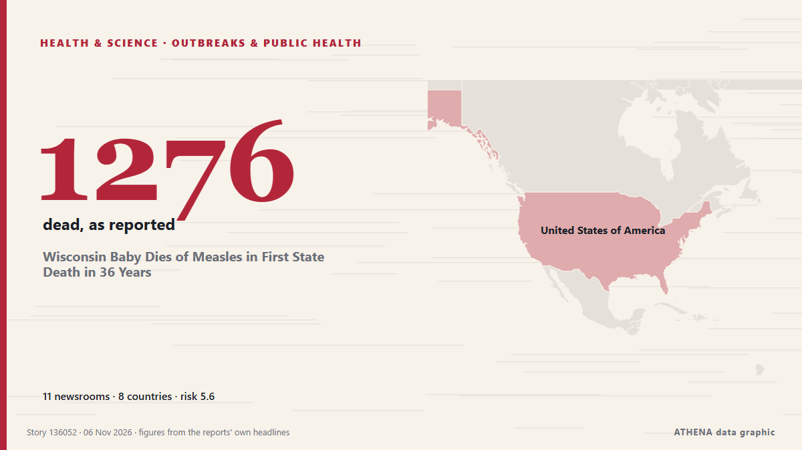

الأوبئة والصحة العامة
برعايةبرعاية  Cybernetics and Artificial Intelligence Lab Welcome to the Cybernetics and Artificial Intelligence Laboratory, established at the Department of Business Administration of the National and Kapodistrian University of Athens. The lab is headed by Professor Dimitrios Thomakos. The lab aims to do research that can be published in top venues. Our research uses tools and methods of Artificial Intelligence, and lies in the following areas: - Forecasting - Decision making - Cyber security - Finance We are always looking forward to collaborating with exceptional students!
Cybernetics and Artificial Intelligence Lab Welcome to the Cybernetics and Artificial Intelligence Laboratory, established at the Department of Business Administration of the National and Kapodistrian University of Athens. The lab is headed by Professor Dimitrios Thomakos. The lab aims to do research that can be published in top venues. Our research uses tools and methods of Artificial Intelligence, and lies in the following areas: - Forecasting - Decision making - Cyber security - Finance We are always looking forward to collaborating with exceptional students!
| 24 أكتوبر | 0 |
|---|---|
| 25 أكتوبر | 0 |
| 26 أكتوبر | 0 |
| 27 أكتوبر | 0 |
| 28 أكتوبر | 0 |
| 29 أكتوبر | 0 |
| 30 أكتوبر | 0 |
| 31 أكتوبر | 0 |
| 1 نوفمبر | 0 |
| 2 نوفمبر | 3 |
| 3 نوفمبر | 1 |
| 4 نوفمبر | 7 |
| 5 نوفمبر | 3 |
| 6 نوفمبر | 2 |
تُعرض العناوين بالإنجليزية كما نُشرت.

Wisconsin Baby Dies of Measles in First State Death in 36 Years
Wisconsin reported its first measles death in more than three decades on Thursday, the latest state to suffer a fatality from a virus that was long eradicated in the US but recently surged back amid… من Livemint
WHO approves clinical trials for two new Ebola vaccines
The World Health Organization has approved clinical trials for two new Ebola vaccines, as doctors fight to control an outbreak in Africa that has killed more than 5,300 people. من RTÉ News
Some 1,800 dead from cholera in Ebola-hit DR Congo: WHO
Cholera has killed around 1,800 people so far this year in the Democratic Republic of Congo, which is also battling its deadliest Ebola outbreak, the World Health Organization said Wednesday. من Medical Xpress
Anthrax Outbreak Kills Dozens of Hippos in DR Congo
Deadly bacterial disease confirmed in Virunga National Park as authorities warn of potential risks to nearby communities and wildlife. من News of Bahrain
Ex-Prince Andrew called to testify in civil case, 1st royal in 156 years to get witness summons
The former Prince Andrew has been called to testify as a witness in a civil fraud trial, marking what is believed to be the first time in more than 150 years that a member of the royal family has… من The Canadian Press (via CityNews)
COVID class action certified over alleged negligence at Toronto long-term care home
Lawsuit alleges Downsview and Gem were grossly negligent in their response to the pandemic, resulting in multiple outbreaks at the home. من The Globe and Mail
Africa: One in Four Adolescents Worldwide Reported No Active Days in the Previous Week
[WHO] One in four adolescents worldwide reported not getting at least 60 minutes of physical activity on any day in the previous week. من AllAfrica
Afghanistan launches polio vaccination campaign targeting 12.8 million children
The World Health Organization says Afghanistan has recorded 42 confirmed polio cases so far this year, twice the 21 cases reported in all of 2025. من Amu TV
Uneven and Fragile Progress Against Neglected Tropical Diseases – New WHO Report
While substantial progress has been made in driving down the global burden of neglected tropical diseases (NTDs), trends are “uneven and fragile”, and several diseases are off course to meet 2030… من Health Policy Watch
WHO sounds alarm over lack of physical activity among teens
GENEVA, Switzerland (AFP) — A quarter of teens globally engage in basically no physical activity — not even an hour of exercise a week — the World Health Organization (WHO) said Wednesday, warning… من Jamaica Observer
Ebola survivors comfort sick children in Congo’s isolation wards
BUTEMBO, Congo, Nov 3 - Whenever Jerkis Mahamba hears a child cry out in the Ebola ward in Butembo, eastern Democratic Republic of Congo, he puts on protective gear and rushes to their side. من The Straits Times